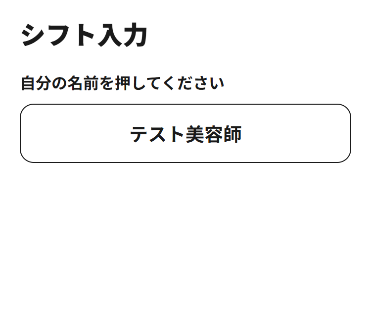
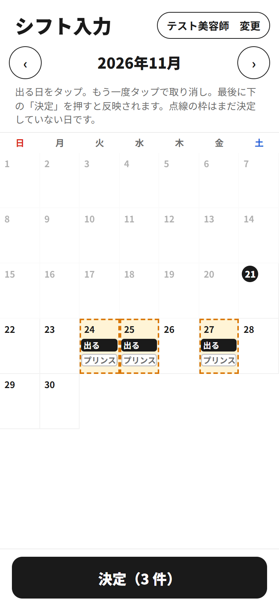
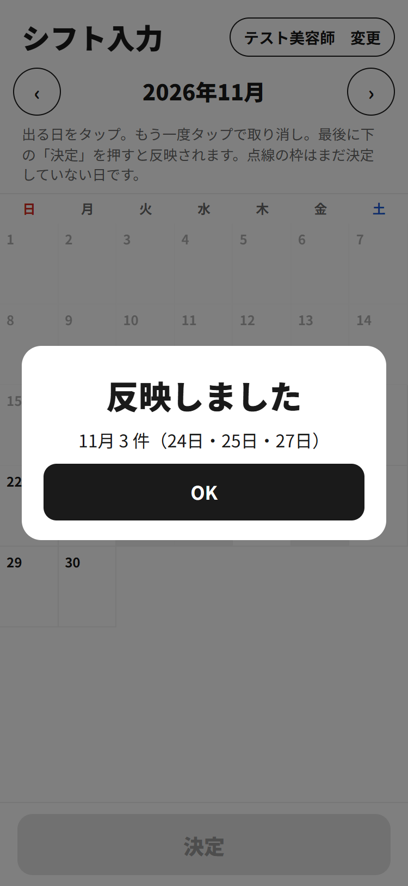
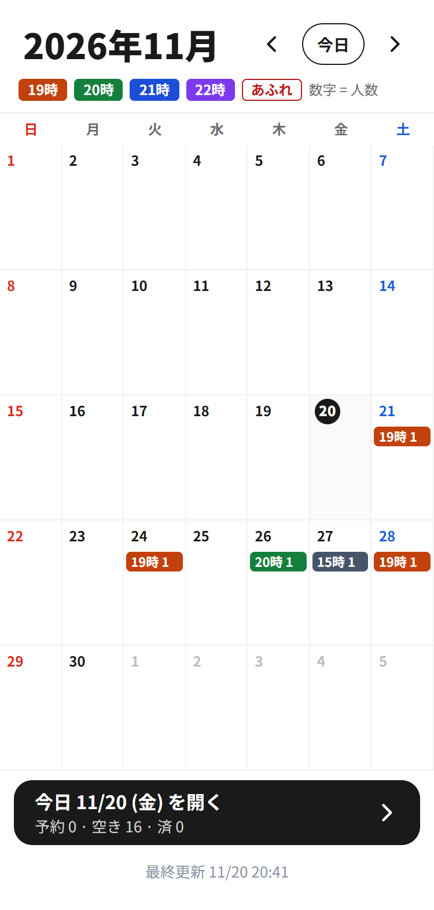
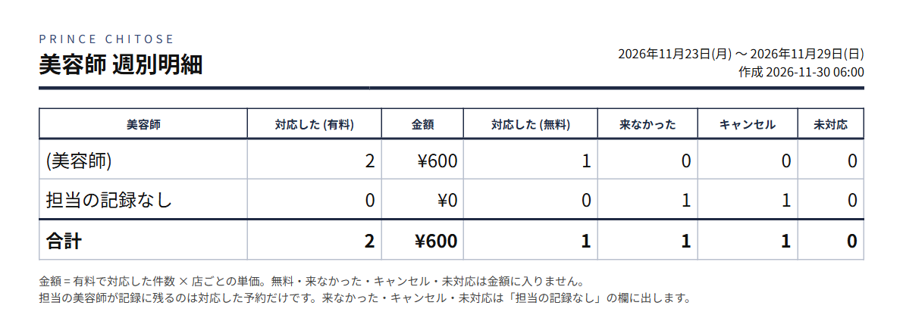

1 シフトを 入れる出る日を えらんで、「決定」を 押します
届いた リンクを
指で 押します
https://simplelifedesignlab-cyber.github.io/prince-apply/salon-shift/
青い文字を 1 回 押すと ページが 開きます。
お店から届いた リンクで 開いてください。
押します

同じスマホなら、次からは この画面は 出ません。見本 (テスト用の名前)
1 日ずつ 押します

まちがえたら、もう一度 同じ日を 押すと 取り消せます。見本
うすい字の 日は 過ぎた日なので 押せません。
押します！
(3 件) は 押した日の数です。見本
押し忘れに 気をつけて ください。
出たら おしまい！

直したい時は？
・日を直す … 直したい日を押す → 下の「決定」を押す。(出る日をもう一度押すと「取り消し」になります)
・来月 … 月の左右の「‹」「›」を押す。
・名前をまちがえた … 右上の「名前 変更」を押して、選びなおす。
・過ぎた日は、直せません。
2 予約の カレンダーを 見るお店から届いた「美容室」のリンクで 開きます
ひと目で 見えます

1 色の帯は 時間です (19時・20時・21時・22時)。数字は 人数です。
2 日を 押すと、その日の くわしい画面に 進みます。
3 下の黒いボタンで「今日」が すぐ 開きます。
入れる人数を こえると、帯が 赤い枠になります (あふれ)。
空きが 時間順に 並びます

1 色のついた 行が 予約です。「対応済」は 終わった印です。
2 点線の「空き」は まだ 入っていない 枠です。
3 来たら 記録する「対応した」「来なかった」「キャンセル」の 3 つから えらびます
この画面が 出ます

1 まず「担当」で 自分の名前を えらびます。
そのあと 次の 3 つの どれかを 1 回 押します。
お客さまに 対応が 終わったとき。
予約の 時間に 来なかったとき。
予約が 取り消しに なったとき。その枠は 空きに もどり、ほかの子を 入れられます。
有料が あります

1 19時より前の 撮影などは、いちばん下の「特別枠」から、15:00 以降 (30 分きざみ) で 入れます。
2 予定が「撮影」のとき、美容室費 (無料 / 有料) を えらびます。
3 最後に 黒い ボタンで 確定します。
こんな ときです
| こうなったとき | 明細では |
|---|---|
| 有料で 対応した | 件数と 金額に 入る |
| 撮影で 無料の 対応 | 金額は なし (「無料」の 数に 入る) |
| 来なかった | 金額は なし (「来なかった」の 数に 入る) |
| キャンセル | 金額は なし (「キャンセル」の 数に 入る) |
「来なかった・キャンセルは 金額なし」は、今の 仮の決めです。かわったら この ページを 直します。
4 明細(めいさい)の こと自動で 作られます。美容師さんが 作る必要は ありません
自動で できます
お店の 管理の Google ドライブ 「美容室 明細」 に、PDF が できます。
| いつ | どんな明細 |
|---|---|
| 毎日 朝 6 時台 | 前の日 1 日分 (「日別」フォルダ) |
| 月曜 朝 6 時台 | 先週 1 週間分 (月曜〜日曜) (「週別」フォルダ) |
お店には メールは 送られません。フォルダに PDF が おかれるだけです。

いつ 届くの？
別の 仕組みとして、毎週 月曜の朝 (10 時の予定・仮)、前の 月曜〜土曜の分の 「送迎の 週払い明細」と「美容師の 実績 (人数)」を、1 通のメールで 中村本部長へ 送る ものも 作ってあります。
ただし 送り先を まだ 入れていないので、今は 届きません (止めてあります)。いつ 始めるかは 確認中です。
5 こまった ときひとりで なやまず、すぐ 聞いてください
聞いてくださいね
・ページが 開かない / 「読み込めませんでした」と 出る → もう一度 ページを 開きなおす。それでも だめなら 連絡。
・「決定」を 押したか 自信がない → もう一度 ページを 開いて、出る日に 黒い札が あるか 見る。